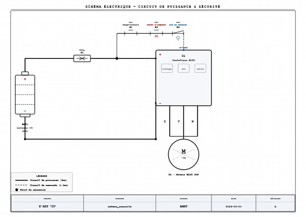
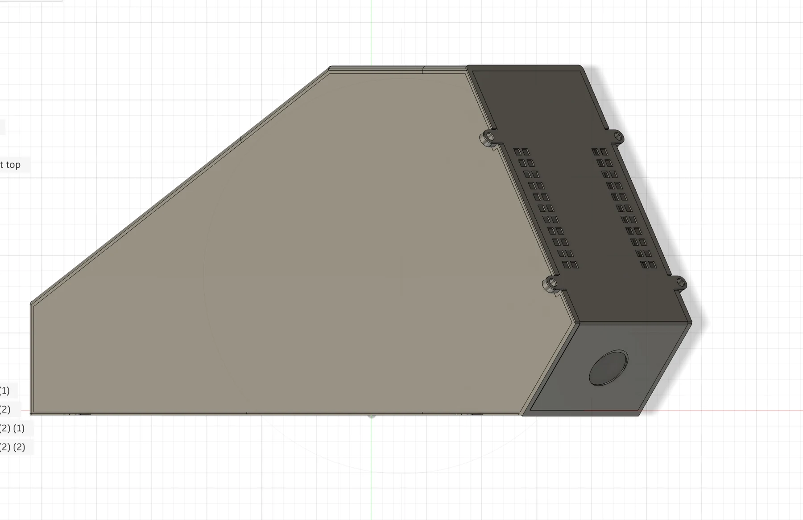
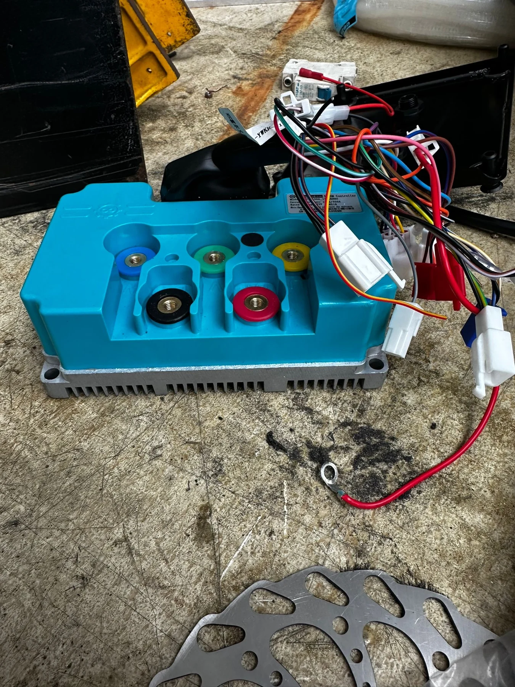
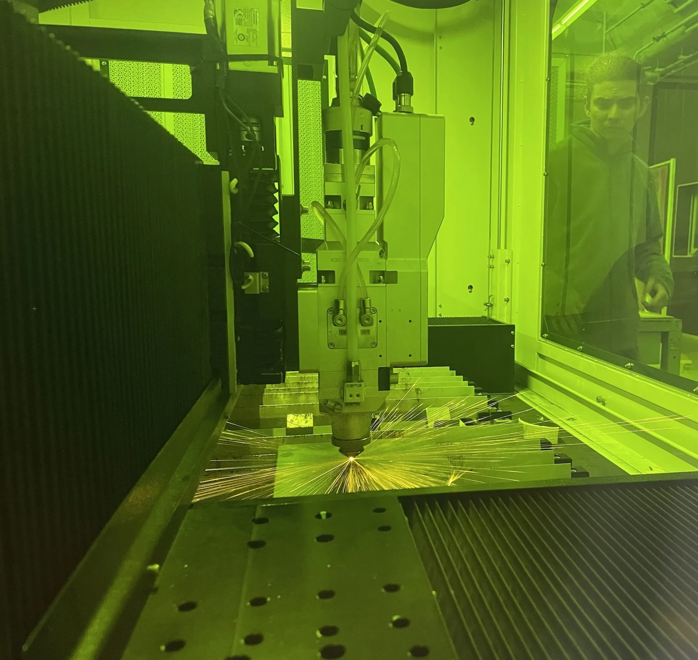
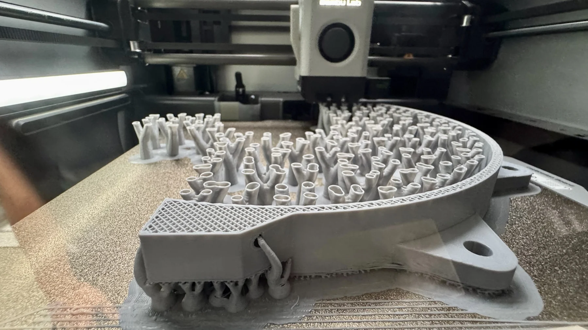
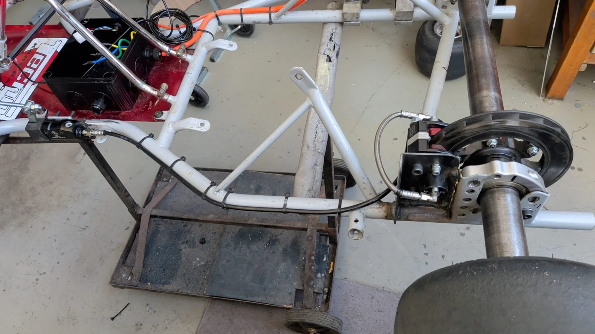
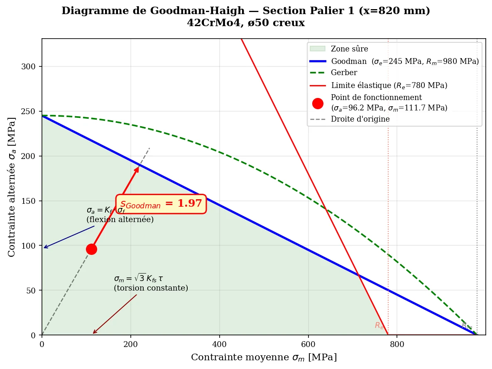
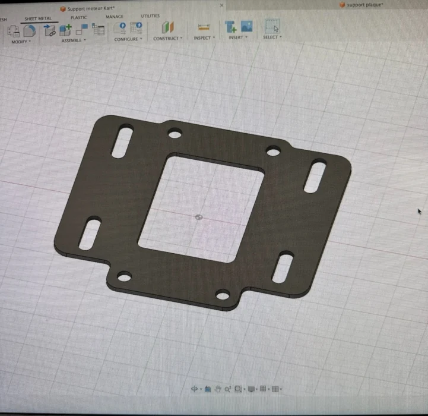
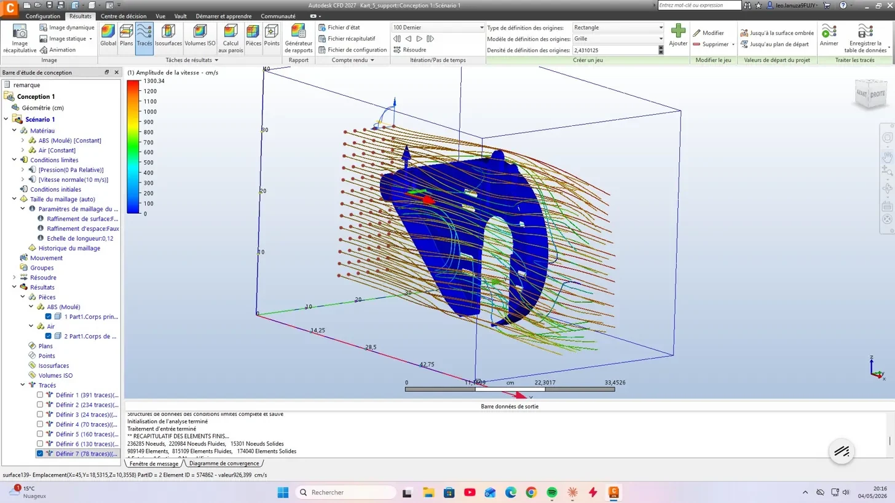
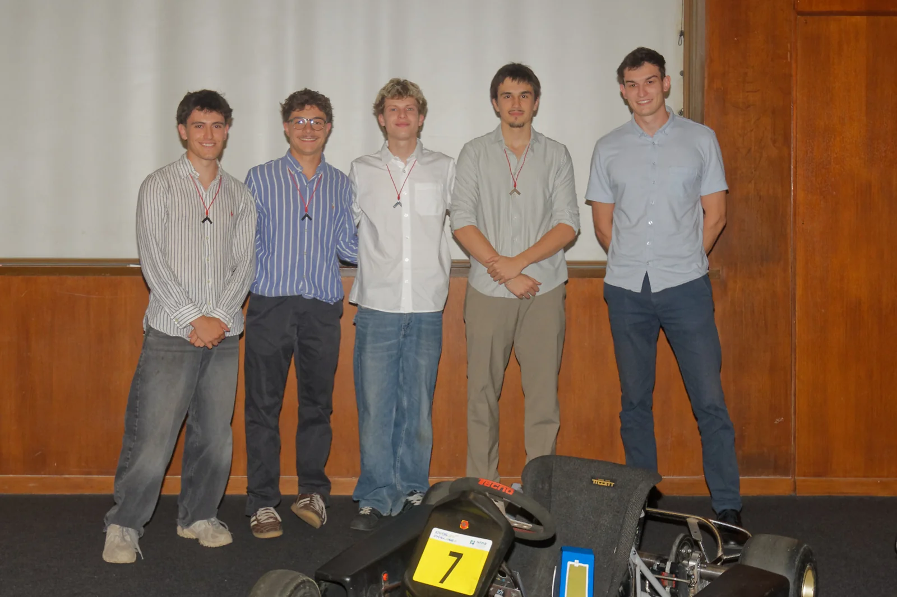

AMRT · ENEDIS EV Challenge · 2026
Electric kart.
Engineered
together.
A student team. An electric powertrain.
One kart, built around real constraints.

One kart. Many disciplines.
Our five-student AMRT team brought an existing chassis through an electric conversion for the ENEDIS EV Challenge. The project brought mechanical design, electrical integration, fabrication and energy strategy into one machine.
We worked with a 72 V battery and a nominal 5 kW BLDC motor. The most valuable outcome was seeing our engineering decisions meet the demands of the event, including the endurance run.
My contribution
As AMRT president and kart team lead, I coordinated the five-student team, the work plan and partner relationships. I also took part in the design, electrical integration and workshop assembly, moving between CAD, fabrication and race-day decisions.
The calculations and component designs here are collective work. This project taught me to connect each specialist task to the behaviour of the complete kart.
Building the electric system
The architecture connects a 72 V battery and integrated BMS to a fuse, a Kunray sinusoidal controller and the BLDC motor. We packaged the battery around the chassis and designed its hybrid protective enclosure with a printed skeleton and formed aluminium faces.



Wiring for a vibrating machine
We wired the emergency stop and removable safety cut-off into the controller’s command circuit. On the key-switch harness, we soldered and insulated the connections with heat-shrink tubing. For the safety-switch terminals, we used crimped connectors to avoid stiffening the wire strands. We also soldered the two-position Eco/Boost switch and protected its connections.
The controller’s native high/low-speed input gave the driver two operating modes without adding an external power limiter.
Made in the workshop.
From the digital model to a physical part. Laser cutting and forming helped us produce metal supports; 3D printing made more complex protective geometries possible.


Making the mechanics work
Braking and rear-axle integration
We checked the brake-support loads, then reinforced the support. Under the team report’s load assumptions, the calculated root bending moment fell from 105 to 52.5 N·m, and the static safety factor rose from 1.01 to 2.01.

Torque through the axle
For the selected 50 mm hollow steel axle, the report compares maximum traction torque with emergency braking. At 252.8 N·m traction torque, the calculated torsional stress is 33.4 MPa; the combined bending-and-torsion equivalent stress is 77.1 MPa under the stated assumptions. A separate Goodman fatigue check gives a calculated factor of 1.96.

That analysis helped us choose a stiffer axle without a substantial mass increase. It is a design calculation, complemented by fitting and assembly work on the real chassis.
Integrating the motor
CAD models and a fabricated support brought the motor and controller into the existing chassis, with space for the transmission and its protective cover.

Checking the transmission cover with CFD
We designed a 3D-printed chain cover, then compared two versions in Autodesk CFD: one closed and one with eight ventilation slots. The virtual test used a 10 m/s inlet speed, matching the indoor-kart context in the report.

The comparison gave us a clear visual reason for the openings: they let air cross the cover instead of remaining trapped inside. It was a qualitative design check, not a measured cooling result.
Managing energy during endurance
The controller’s built-in Bluetooth link connected to the Faredriver phone app. During the endurance run, we followed live motor speed, battery discharge current, power demand and motor temperature. That data informed how we managed consumption and regenerative braking over the stint.
A two-position switch gave the driver Eco and Boost modes. We used that flexibility to balance pace against the remaining energy, especially through slower sections and toward the end of the run. This was a first experience of live data analysis and race engineering: decisions made around the performance of the full system, not just maximum power.
The strategy helped us manage the battery through the endurance run; no unrecorded lap time or efficiency gain is claimed.
What the project taught me
The best part was moving from a model to a kart we could use at the event. I learned to keep mechanical, electrical and team decisions connected: a good component is only useful when the complete system works.
The endurance run also made energy management tangible. Watching the controller data and adjusting the strategy over the run showed how design, testing and race engineering come together.
From build to race result
After a year of design and workshop work, the kart competed in the 2026 ENEDIS EV Challenge. The team qualified second in its group and finished seventh overall in the two-hour endurance event.
Mechanical failures between sessions required repairs under time pressure. The result therefore reflects more than the initial design: integration, quick diagnosis, teamwork and energy management all mattered at the track.
Second in our qualifying group and seventh in the two-hour endurance classification.
A team achievement

The electric kart received the Prix Peyroux, presented by the Groupe Girondin de Bordeaux for the most technical project in our year. The award included €2,500 for the team.